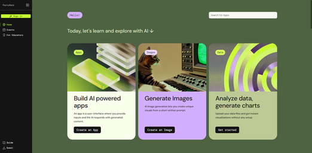

Satu jalur belajar santai untuk pemula: kenalan dulu dengan cloud dan generative AI, lalu langsung coba bikin aplikasi sendiri pakai AWS PartyRock — tanpa menulis satu baris kode pun.
Konsep dasar, AWS, dan peran kerja di industri cloud.
Daftar AWS Skill Builder, belajar dan mengasah skill kamu.
Dari AI klasik ke Gen AI, jenis output, dan layanan AWS.
Agentic IDE, Spec-Driven Development, EARS Notation.
Membuat aplikasi AI dengan Partyrock.
Sebelum bicara AI, kita mulai dari pahami konsep dasar cloud computing, bagaimana komputasi modern bekerja.
Menurut definisi Amazon Web Services: layanan komponen IT secara on-demand yang dapat diakses di mana pun melalui internet, dengan biaya pay-as-you-go — bayar sesuai pemakaian.
Platform cloud computing dengan market share terbesar di dunia — sekitar 32%. Digunakan perusahaan besar seperti Airbnb, Netflix, Twitch, dan Twitter. Berada di bawah Amazon (didirikan 1994), AWS lahir tahun 2006.
AI sudah ada sejak 1950-an. Generative AI adalah babak terbarunya — dan yang menjadi dasar bagi Kiro.
| Generative AI | AI Lainnya | |
|---|---|---|
| Tujuan Utama | Menciptakan konten baru & orisinal | Klasifikasi, pengenalan pola, prediksi |
| Fungsi | Teks, gambar, musik — butuh kreativitas | Analisis data, rekomendasi, deteksi wajah |
| Output | Benar-benar baru, tidak ada di data latih | Berdasar klasifikasi/prediksi dari data lama |
ChatGPT, Claude — cerita, artikel, kode.
DALL·E, Midjourney — dari deskripsi teks.
Sora, Runway — dari skrip atau gambar.
ElevenLabs — suara manusia dari teks.
Layanan terkelola penuh untuk membangun & melatih model AI, siap produksi.
Akses foundation model performa tinggi lewat satu API — fondasi Kiro.
Asisten generatif untuk bisnis & developer, termasuk code creation.
Playground interaktif untuk belajar & membuat aplikasi Gen AI tanpa ribet.
"Bring engineering rigor to agentic development." Kiro adalah agentic IDE dari AWS, ditenagai Amazon Bedrock.
Sebelum masuk ke Kiro, kenalan dulu dengan konsep di baliknya. Kiro adalah contoh dari Agentic AI — AI yang tidak cuma menjawab pertanyaan, tapi bisa bertindak untuk mencapai tujuan Anda, langkah demi langkah, secara mandiri.
Large Language Model — bagian yang berpikir. Memahami permintaan Anda, menyusun rencana, dan memutuskan langkah apa yang perlu diambil selanjutnya.
Kemampuan nyata untuk bertindak — menulis file, menjalankan terminal, browsing web. Tanpa tools, AI hanya bisa "berbicara", tidak bisa "mengerjakan".
Hasil akhir yang ingin dicapai — misalnya "buat website toko online". Goal inilah yang menuntun setiap keputusan LLM dan penggunaan tools.
| Vibe Coding | Spec-Driven Development | |
|---|---|---|
| Titik awal | AI langsung menulis kode | Membuat requirement lebih dulu |
| Dokumentasi | Tidak ada | Dibuat secara otomatis |
| Proyek skala besar | Sulit | Terstruktur |
| Kolaborasi tim | Susah | Mudah |
| Prediktabilitas hasil | Rendah | Tinggi |
Mengubah ide jadi requirements, design, dan tasks — inti dari Spec-Driven Development.
File panduan agar AI konsisten dengan standar tim dan proyek yang dikerjakan.
Otomatisasi yang berjalan sendiri saat peristiwa tertentu terjadi, misalnya file disimpan.
| Fitur | Kiro | GitHub Copilot | Cursor | ChatGPT |
|---|---|---|---|---|
| Spec-Driven Development | ✔ | ✘ | Partial | ✘ |
| EARS Notation Requirements | ✔ | ✘ | ✘ | ✘ |
| Agent Hooks (auto-trigger) | ✔ | ✘ | ✘ | ✘ |
| Gratis untuk pemakaian dasar | ✔ | ✘ | Partial | Partial |
Fitur kompleks banyak komponen, risiko tinggi, butuh dokumentasi tim, proyek jangka panjang, multi-developer.
Eksplorasi cepat, script 1–2 file, bug fix yang jelas penyebabnya, tugas one-off, belajar sambil main.
Playground Generative AI dari AWS, ditenagai Amazon Bedrock. Rancang aplikasi AI kustom dalam hitungan detik — tanpa keahlian coding sama sekali. Ini yang akan langsung kita praktikkan bareng-bareng di event ini.

Mempermudah pembuatan teks kreatif, artikel, email bisnis, hingga tugas sekolah.
Memvisualisasikan ide lewat deskripsi teks yang langsung jadi gambar.
Meningkatkan produktivitas karir dan efisiensi manajemen operasional harian.
Menganalisis foto unggahan dan memberi predikat unik seperti "Senyum Terbaik".
Asisten interaktif untuk melatih argumentasi dan komunikasi.
Konsultasi memilih jurusan kuliah sesuai bakat dan kemampuan.
CONTOH PROJECT LIVE DEMO
s.id/BMICHECKAplikasi pertamamu di PartyRock sudah jadi. Kalau mau lebih dalam lagi ke dunia agentic AI, dua arah ini bisa kamu ambil.
Coba bikin ide lain, gabungkan beberapa widget, atau remix aplikasi teman kamu. Tidak ada batas jumlah aplikasi yang bisa kamu buat.
Kalau sudah nyaman dengan konsep prompting dan mulai penasaran menulis kode sungguhan, cobalah dengan Kiro untuk membangun aplikasi lengkap dari spec sampai jalan.